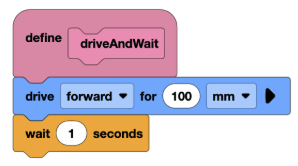
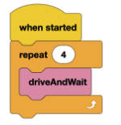
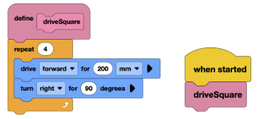
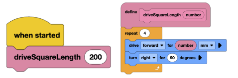

Lesson 11: MyBlocks & Functions
Objective(s)
- Learn what functions are and how to use them in VEXCode
Materials Needed
- Computers (1–2 per group)
- Basebots
- VEXcode IQ website
- Notebooks and writing utensils for each student
Lesson Procedure
1. Overview
- In this lesson, students will gain an understanding of functions and their uses. They will create different functions to move their robots.
2. Getting Started
- Have students discuss questions:
- What are some actions used so far that the robot repeats often?
- In real life, can you think of examples where we reuse a process instead of recreating it every time?
- Review the lesson document and have students take notes.
3. Monitoring Progress
- Have students open the VEXcode IQ website and set up the same drivetrain used in previous lessons.
- MyBlocks Demonstration – have students follow along:
- Click the “My Blocks” category in the left-hand menu.
- Click “Make a My Block”.
- Name it “driveAndWait” and click OK.
- Drag blocks that drive 100mm, then wait one second.
- Run the myBlock 4 times in a loop.
- Allow the student to test the code.
- Task 1: Create a square (200mm):
- Ask the student to create a myBlock to drive in a square. The program should incorporate a loop.
- The program might look like this:
- Task 2: Create a square using myBlock parameters:
- Ask the student to create a myBlock with side length as a parameter.
- The program might look like this:




4. Wrapping Up
- Students will review what they learned in a class discussion.
- What are the benefits of using My Blocks (functions)?
- When would it not make sense to use a My Block?
Assessment
- Students understand what functions (MyBlocks) are and when to use them.
- Students can define and use MyBlocks on the VEXCode IQ website.
Preparation for next class
In the next class, students will learn debugging. Students should make sure they know how to implement each concept taught so far.